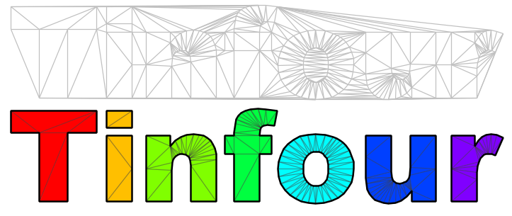

Welcome to the Tinfour Project Documentation

What Tinfour Does
The focus of Tinfour is the Delaunay Triangulation. The Delaunay Triangulation
defines an optimal form for organizing unstructured or semi-random
sample points into a triangular mesh. That optimality makes the Delaunay Triangulation
a useful tool for interpolation, grid construction, and surface analysis.
Project Notes
To help you use Tinfour, we've posted four flavors of documentation:
- The Ideas –
Articles that introduce the concepts and techniques used in the Tinfour software.
These pages cover general topics related to the Delaunay triangulation, graph theory, and geospatial analysis.
- The Wiki –
Tutorials, code examples, useful tricks, and step-by-step instructions for
using the Tinfour software in your own projects.
- The Internals –
A PDF giving notes on the internal design and algorithms of the Tinfour API. If you wish to add new features
to Tinfour, or write your own Delaunay triangulation software, you will find this document
a useful source of information.
- The API –
Our source code includes lots of documentation. You can access the Javadoc for each
of the Tinfour modules at the following links:
- Core –
The core implementation of our Delaunay triangulation, interpolation, and other support classes
(no external dependencies)
- GIS –
While Tinfour is not a Geographic Information System (GIS), it does provide a small set of tools
for accessing GIS-related data sources including Lidar elevation and ESRI shapefiles.
- Demo –
Demonstration implementations that show how to use the Tinfour APIs
- SVM –
The Simple Volumetric Model (SVM), a hydrographic anaylsis utility for estimating the
volume and capacity of lakes and reservoirs using the Delaunay Triangulation
- Analysis –
The Analysis module includes our experimental Geographically Weighted Regression implementation as well
as other mathematics and statistics applications.
You can find source code and project information on Github at:
- The Tinfour Repository –
A free open-source collection of high-performance Delaunay Triangulation software written in Java.
The Ideas
The articles listed below describe the ideas that form the basis of the Tinfour software.
The Delaunay Triangulations
Natural Neighbor Interpolation
Natural Neighbor Interpolation is a technique for reconstructing a smooth and visually pleasing
surface from a set of scattered sample points.
- An introduction to Natural Neighbor Interpolation –
This article provides a lightweight introduction to the ideas and mathematics behind the Natural Neighbor Interpolation.
It also discusses some of the strengths and weaknesses of the technique.
- A fast and accurate algorithm for Natural Neighbor Interpolation –
The Tinfour software suite includes a robust implementation of the Natural Neighbor technique that
can process over a million interpolation per second on a commodity laptop. This article describes
the Tinfour algorithm and introduces an often overlooked test procedure that can be used to verify that a
Natural Neighbors implementation is correct.
Volume and Capacity Analysis for Lakes and Reservoirs
The Constrained Delaunay Triangulation (CDT) can be used as an efficient tool for computing the volume and
capacity of lakes and reservoirs. This series of articles describes the Tinfour technique
and how its used in an application called the Simple Volumetric Model (SVM)